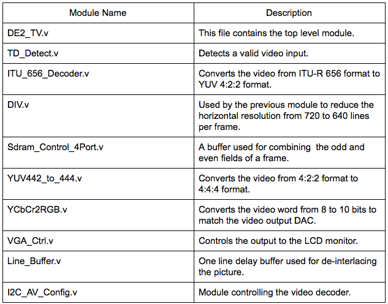
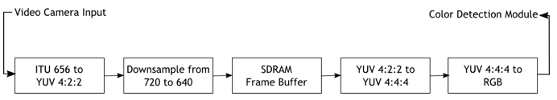
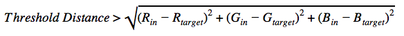
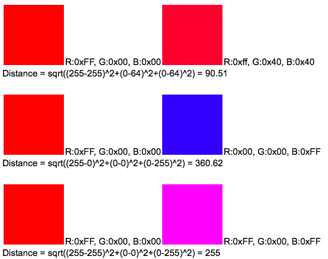
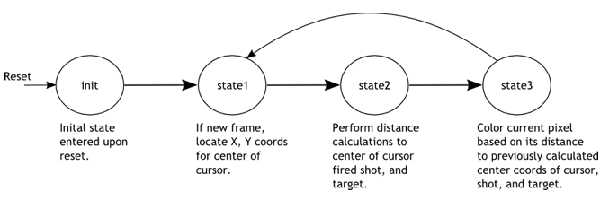
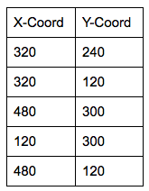
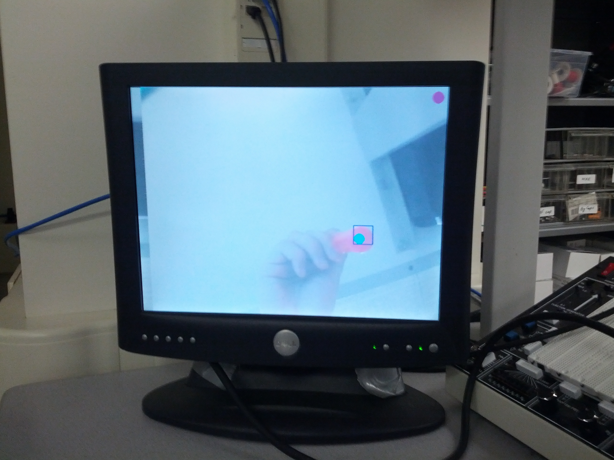
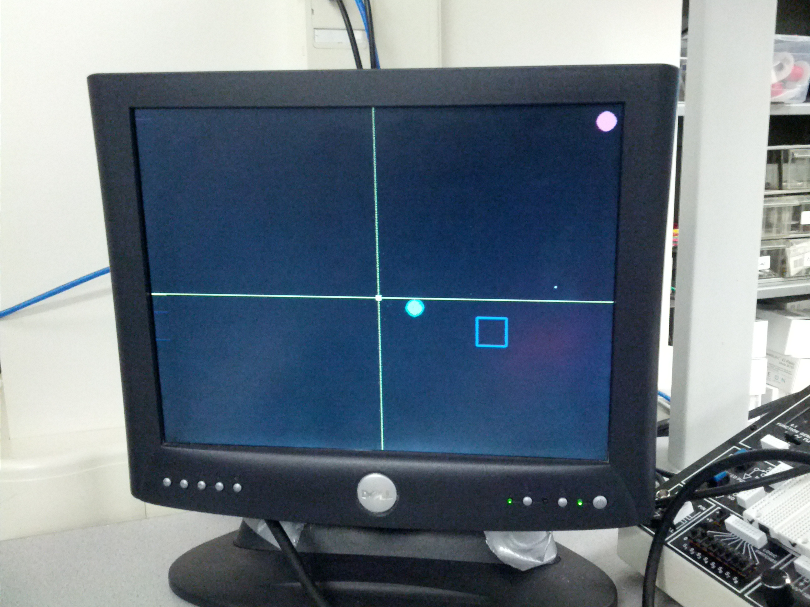

Project to turn a red colored screwdriver into a digital shooting machine
Our idea is to have a full hardware and software video game solution that is able to use real-time motion tracking as control input to a video game. We intend to have fine-grained motion tracking by using finger/hand movement to simulate a gun in a shooter video game being displayed on a VGA monitor. The source of this idea comes as a natural progression to the Lab 2 Lunar Lander video game which we enjoyed and wanted to enhance by taking advantage of the versatility and power of the FPGA’s parallel processing. We decided to focus on a shooter game with short movements because current movement trackers available in games (i.e. Xbox Kinect, Wiimote) focus on wide, limb based movement while our game uses a movement in a smaller resolution.
To create this game we used an Altera DE2 board with a CycloneII FPGA to synthesize our video processing core. The video input is taken from video camera that outputs an NTSC signal that is processed to extract RGB values from the image in the camera’s field of vision. The RGB values are used to single out a distinctive color value by applying a threshold and this object’s center is used as our gun’s crosshair. The VGA controller is used to output the video feed into the VGA monitor as well as to display multiple overlaying objects like the crosshairs, targets, and shots taken that are drawn over the video image. We use the 7-segment display to keep track of a player’s score and switches control different parameters in the game like difficulty level.
This section details the video input hardware, cursor control hardware, video output hardware, and other miscellaneous hardware, as well as the game logic.
We used a bullet digital video camera provided by the lab for our video input. As a baseline, we used the code provided on the ECE 5760 homepage to get started with video input processing. Just figuring out the provided code and how it worked was task in itself, but a summary of the necessary modules is described in the table below.


Video data is read in from the Video-In plug on the DE2 board. The data then goes through a series of hardware modules converting the input data to a standard RGB format that we can easily work with.
Data from the camera is streamed using the ITU656 protocol. We cannot work with this format directly, so we must first convert the data to a more standard YUV 4:2:2 format. In this color display format, colors are encoded as three different components: Y (luma), Cb (blue-difference), and Cr (red-difference). This format is not an absolute color space on its own, but just a way of efficiently encrypting RGB data.
Once the input data is converted to the YCbCr format, the signal is downsampled from 720 lines/frame to 640 lines/frame. After downsampling, the data is stored in a SDRAM frame buffer. The output of the frame buffer is then sent through one last conversion process, transforming the video data from the YUV 4:2:2 format to the YUV 4:4:4 format, then finally to a standard 10-bit RGB format that we can work with in our color detection module.
Our parameterized color detection module allows us to highlight specific colors in a frame and output the modified frame to the VGA monitor. This module sits between the RGB output from the video input hardware described previously and the VGA controller, which sends color data to the monitor. In addition to taking the RGB output as input, this module also takes in target color values and desired threshold for determining color closeness.
The module observes each pixel as it is sent through the pipeline, and checks whether or not it matches the target color. To determine the how similar to colors are we use a sum-of-squared-differences calculation. Two colors (in & target) are considered the same if the following equation is satisfied:

Where Rin, Gin, Bin are the 10-bit color data of the pixel and Rtarget, Gtarget, Btarget are the 10-bit RGB values of the target color. Threshold distance is an empirical value so the object we used as a cursor would be detected.
Some sample calculations are provided below:

Note that these calculations are using 8-bit RGB values.
For our project we used a red screwdriver as our cursor (it’s what we had on hand at the time), so our target color is a shade of red. Also, finding the square root of a value is a resource costly function, so we avoid this step by comparing the sum of the squares to a predetermined threshold value. If the value determined to be the distance between the current pixel’s color and the reference color was below the threshold, the pixel is considered red and is highlighted.
Cursor control is a simple extension of our color detection module. Once the pointer object (red screwdriver) has been detected, we can get the coordinates of the object within a 640x480 grid of pixels. We create a bounding box around the detected object and the center of that box is the point we use for the cursor’s coordinate. The edges of the bounding box are updated whenever a new red pixel is detected. The coordinate is then passed to the video output hardware so the cursor can be drawn to the monitor. One problem we ran into with cursor control was how jumpy the control was. To resolve this we used time-weighted averaging on the cursor center to smooth out the movements a little.
A finite state machine is used to determine the location and drawing of the objects on the screen. The state machine is clocked by the rising edge of 50 MHz clock and begins in the “init” state. When reset is pressed (KEY[0]), the state machine returns to the “init” state. No action is taken in the init state except to set the state variable to “state1”.

In the state “state1”, the location of the cursor is recorded; this location is based on the output of the color detection module. The location is updated only once every frame. The state variable is then updated to “state2”.
State “state2”, is used to determine the surrounding pixels of the cursor center, which was recorded in state “state1”. To do this, the cursor center’s x and y addresses have VGA_X and VGA_Y (current position of VGA controller) subtracted, and that difference is stored in registers DIFF_X_1 and DIFF_Y_1. In addition, the last fired shot x and y addresses are also subtracted from the VGA x and y address and recorded. The state variable is then set to “state3”.
In state “test3” the actual drawing of cursor, last shot fired, and target occur. If the current pixel is within a defined radius of the center of the cursor, that pixel is colored blue . The coloring of the where the last shot was fired and where the target currently is are done similarly. When this is all done, the state variable is set back to “state1”.
The logic for our game is pretty simple. The game is point based and uses a target to determine whether a shot gained a point or missed the target. The points are displayed on the 7-segment hexadecimal display available in the DE2 board. The target is a 40x40 pixel square that appears in different locations on the screen and the user has to register a shot inside the square in order to increase his/her points. There are 5 predetermined locations where the square appears indicated by the table below:

These positions were chosen at random by us and the point here is not to make a randomly appearing target (which would be more interesting) but to change the rate at which we cycle through these locations to vary difficulty. In order to change the rate we use the switches 1 to 3 to indicate a time value in seconds that will be used to determine when to change locations. The seconds range from 1 to 8 seconds which is enough time variability for most gamers to hit the target at least once.
To draw the targets we use the changing target locations as centers and draw the square according to the 40x40 sized square. We detect when a shot is in bounds by checking that the shot was fired within the bounds of the square. There also is a flag to indicate when a new shot was fired to avoid double counting of points since the target will eventually cycle back to a location.
One of the things we originally had planned for was to have the NiosII CPU as a co-processor that would control the VGA and other peripherals more in the spirit of the way the Lunar Lander game was made. However we spent too much time trying to get the NiosII to share memory with the video processor by testing out different memory configurations which essentially is an infrastructure problem and not enough time developing our game. We decided to give up that idea and instead manipulated the VGA controller in hardware which is only fractionally harder than doing it in the NiosII. Due to this our graphics ended up being a lot simpler than originally intended but it was a trade-off for the sake of productivity.


Our design is quite responsive to movement but it has various different video constructs we weren’t able to resolve. One of the problems that happens quite often is that the screen does display anything on reset, if its on the video feed the screen goes white and if its on the game screen the screen goes black. We have to restart the game a couple of times until it works. There’s also slight distortion on the edge of the shot fired crosshair but its not noticeably large. Another thing that happens is that the video feed seems to shift right as time goes by indicating that perhaps we are missing timing requirements on the VGA display. Even with these problems the game is playable and clearly visible when conditions are right.
Our design is most accurate if the field of vision is fairly regular or even ideal (all white, with no skin color showing). With various objects of different shades the color detection algorithm detects many false positives, sometimes in objects that are not red. The bigger problem is that these false positives distort the bounding box and the average location enough to change the position of the cursor, the tradeoff being that if we average the position of the cursor too much it won't be as responsive to movement as we hope and the game becomes sluggish. Therefore we chose to idealize the environment instead to make the detection more accurate without trading off movement tracking too much.
There are no safety concerns in our design since its just movement tracking. The only possible hazard is running into someone accidentally which can’t be controlled by our design.
There is no interference with other people’s designs, the only source of noise is based on the environment due to false positives being detected when we try to detect a certain color.
The game is fairly playable if it is handled correctly and may require multiple tries to get it to work properly. Many parameters are either limited by hardware or tuned specifically for the game. For example, distance away from the camera matters significantly as accuracy increases if you are closer to the camera. Also using the right color is critical if you want accurate tracking to be done which also means that any other color that may be similar will read as a good result and will distort the movement. One last factor that influences usability is the responsiveness of the FPGA push buttons which depending on the board can be big problem since our game is timing based, i.e. if it takes you a long time to shoot the target will disappear. Once the cursor reads properly and the buttons are shown to work properly, the game is easy to play and most people could score points at least in the lowest/medium difficulties.
Overall our final result met our expectations since we implemented the features we had intended for the game. Even though our initial vision for the game was more complex, our goal was to have a movement based shooter game and we achieved that goal. For future work we would like to refine several aspects of the game in order to deliver a more convincing game play than the one we currently have. We would like to make the graphics more robust and move away from simple polygons. The motion detection could be refined to make it much more responsive and more accurate as it is sometimes hard to get it to work correctly. We also would’ve like to include sound effects and perhaps even background music but we didn’t have enough time to do it this time.
Our design does not have many standards to conform except for some of the I/O operations that we are forced to comply with otherwise nothing will work. One of them is the NTSC video output from the video camera which is handled by the ITU656 video decoder chip found on the DE2 board. Another is the VGA standard in order to get our video game to display on the computer monitor.
For intellectual property considerations, we would like to thank the previous ECE 5760 Ball-E project for their code which is freely available online. That project borrows code from the DE2_TV project which is probably the biggest resource we are using for this project as well and it is also freely available online. We did not reverse-engineer any design and there are no patent/trademark issues to deal with. We didn’t have to sign a non-disclosure agreement for any part since we only use a video camera and a DE2 board both available for the ECE 5760 course. There are no patent opportunities for this project since its just an application of previous work and we would like to maintain the open source spirit which this work was built upon.